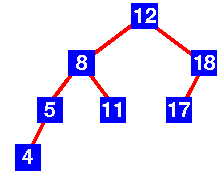

TREE
Trees: Unlike Arrays, Linked Lists, Stack and queues, which are linear data structures, trees are hierarchical data structures. Tree Vocabulary: The topmost node is called root of the tree. The elements that are directly under an element are called its children. The element directly above something is called its parent. For example, a is a child of f and f is the parent of a. Finally, elements with no children are called leaves.

-
Why Trees?
- One reason to use trees might be because you want to store information that naturally forms a hierarchy. For example, the file system on a computer:
- Trees (with some ordering e.g., BST) provide moderate access/search (quicker than Linked List and slower than arrays).
- Trees provide moderate insertion/deletion (quicker than Arrays and slower than Unordered Linked Lists).
- Like Linked Lists and unlike Arrays, Trees don’t have an upper limit on number of nodes as nodes are linked using pointers.